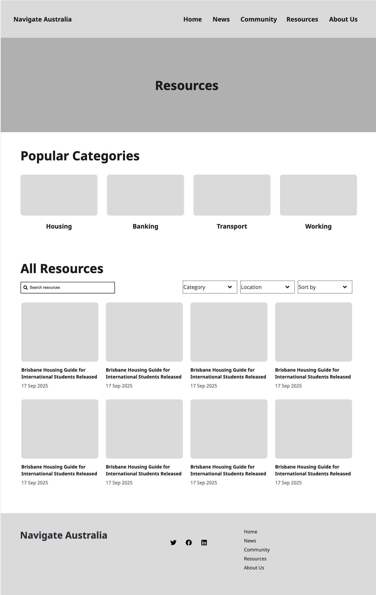

üè†
üß≠
üé®
⚖️
ü§ñ
Home
Site Map
Style Guide
Ethical Response
GenAI Acknowledgement
Home
Style Guide
Visceral Design
Visceral Design
The focus of this section of the Style Guide is ensuring the user has a good first impression of the site.
Page Layouts

Welcome to Adine's Work Phase 3!
Links to my Work Phase Website
Work Phase 1
Work Phase 2
Work Phase 3
Work Phase 4